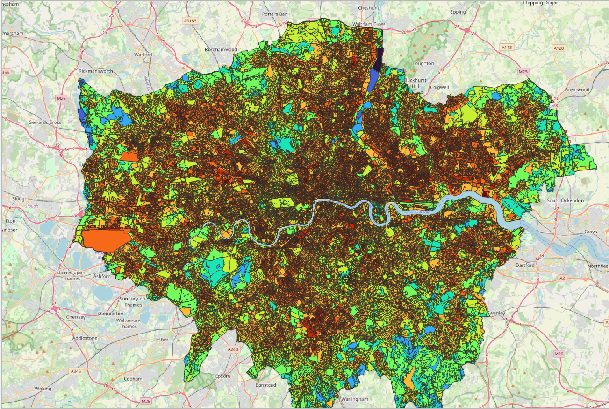
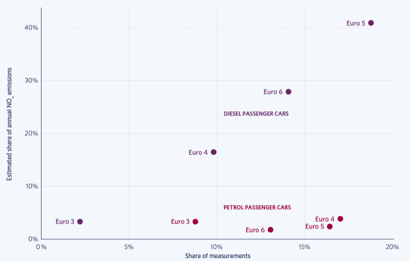

4 Week 4: Policy
- city selected: London, England, UK
- city development policy: zero carbon emission
4.1 Summary
4.1.1 London City Plan – zero-carbon policy
With the increasing scale of greenhouse gas emissions in recent years and the increasing severity of the global warming situation, London 2021 city plan sets a significant goal to minimise the greenhouse gas emission, the detailed aims are below:
- city development should be net-zero carbon: reducing greenhouse gas emission in operation; minimise both annual and peak energy demand according to several energy hierarchies:
- be lean: less energy used and energy demand management
- be clean: fully use local energy (secondary energy explicit) and use energy more efficiently and cleanly.
- be green: add the opportunity for using renewable energy, provide producing, storing energy on-site
- be seen: monitor, verify and report on energy performance.
City development proposals should include energy strategic and demonstrate how energy hierarchy framework includes the zero-carbon target.
A minimum 35% reduction in energy consumption on site for major development program, 10% for residential developments and 15% for non-residential developments through energy efficiency measures should be achieved. Where this is difficult to achieve, there should be compensation for cash compensation for shortfalls or provide an alternative that will meet the target.
Each borough government should establish and manage a carbon offset fund, ensure the capital should be invested to the carbon reduction direction, and all the operations should be monitored and reported to specific authorisations.
Carbon reduction proposal should be quantified as separated to different plants, equipment and other responsible parties.
Whole life-cycle carbon emissions should be calculated to satisfy the proposal of city development through a nationally recognised Whole Life-Cycle Carbon Assessment.
4.2 Application on carbon emission
4.2.1 Step 1: Heat spots identification
Landsat8 satellite can provide a high-resolution thermal data and use as a basis for mapping the spatial distribution of Great London Area (GLA) surface temperatures and identifying those urban hotspots.
- Dataset description:
This dataset is a count of surface temperatures from the summer months (June, July and August only) between 2016 and 2020, obtained from landsat8 thermal infrared imagery. In addition to the five-year average temperature for the area, the dataset also includes maximum and minimum temperatures and standard deviations to provide a visual representation of the magnitude and range of temperature changes over the five-year period in GLA.
- Distribution map and analysis
Higher temperatures indicate places with high population density or dense plant and equipment, where greenhouse gas emissions are generally higher than in places with less.

As can be seen from the map, the population is predominantly distributed between the north and south banks of the Thames, with the population on the north bank being greater than that on the south bank. The green belt around London can be seen more clearly on the map. The population of the north bank is more dense in the east than in the west. The density of population is high from the City of London all the way north, and is also high in north-east London, decreasing further east. Conversely, the centre of the South Bank is more densely populated, while the east and west are less dense. If Greater London continues to expand, the north-east and south-east would be a better choice.
Take the City of London for example, some areas saw the highest temperatures compared with the whole city, such as Euston Station east of Regent’s Park, and most of the high heat areas were in high-traffic areas such as train stations, tube stations, shopping malls and airports.

In addition to population density affecting surface temperatures, industry, airport also have an impact on surface temperatures, with the highest surface temperatures occurring in the five year period shown below at the Dagenham engine plant, ocado customer fullfilment centre, ExCel International Convention and Exhibition Centre along the Thames in east London, and Heathrow Airport to the west.


Knowing the temperature changes will help to understand the population distribution in GLA, which in turn will allow transport to be organised to develop faster and more accessible transport in dense areas, to develop infrastructure and to reduce the pressure on existing transport (for example, the central line passes through areas of great population density, and the central line is the oldest tube in London and still the busiest in London). The central line, for example, is the oldest and still the busiest tube in London, so it has to take on a lot of traffic pressure). In addition, more polluting facilities such as factories can be relocated to less populated areas. Knowing the distribution of temperatures can also control the creation of high temperature situations, such as the rare high temperatures in the London area in the summer of 2022.
4.2.2 Step 2: Identification of high-emitted vehicles
In response to a call for collaboration between the Mayor of London and the TRUE initiative, carbon emissions from passing vehicles were tested using remote sensing technology at nine sites across Greater London between 2017 and 2018, with carbon emissions data recorded for over 100,000 vehicles, The experiment focused on petrol and diesel vehicles in the London area, with vehicle types including passenger cars, buses, light passenger vehicles, trucks and motorbikes, and measured emissions of carbon oxides and nitrogen oxides.
- Dataset example
- Remote sensing equipment introduction
The remote sensing equipment used for the experiments was the Opus AccuScan RSD5000, which was the first to test exhaust gases in three main ways:
The device emits infrared and ultraviolet light velocities that pass through vehicle emissions, measuring the attenuation of these beams, instant vehicle emissions, the device measures nitrogen oxides and carbon oxides, opacity is measured as a proxy for respirable particulate matter, the device emits a frequency of 200 Hz and can measure 100 times in 0.5 seconds.
Measurement of the instantaneous acceleration of the vehicle as a measure of the engine load, which is related to the instantaneous emission rate.
One camera is responsible for photographing the vehicle licence plate for database comparison to determine its model, displacement standard.
- The general conditions of testing vehicles
- Result:
- Diesel passenger cars are six to seven times more likely to emit nitrogen oxides than petrol passenger cars.

- Euro5 and Euro6 diesel engines emit significantly more nitrogen oxides than Euro3 and Euro4, while petrol engines emit the similar amount
Therefore, petrol vehicles outperform diesel vehicles and to achieve carbon emission reductions, the number of diesel vehicles needs to be limited and Euro3 or Euro4 diesel engines should be promoted instead of Euro5 and Euro6.
4.3 Reflection
In this week, I focused on the specific city development goal, minimising carbon emission, building zero-carbon city, to find cases for practice, and use the heat spot distribution map and identification of high-emitted vehicle to demonstrate how these goals are met within the energy hierarchy framework.
With the policy and the measurement mentioned on the London city plan 2021, the borough governments will take actions to control high-emitted areas and objects, for example, set the highest emission restriction for plants and equipment, and decrease the peak energy demand. restrict vehicles (time restriction, location restriction) to the city center area, encourage the replacement of Euro engine by providing benefits and making compensation.